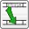

Manual de BulmaCont
-
-
-
-
-
-
-
-
-
-
-
-
-
-
-
-
Introducción de Cuentas y Subcuentas
Datos Complementarios
-
-
-
-
-
-
-
-
-
-
-
-
-
-
-
-
-
-
-
Libro Diario:
-
-
-
-
-
-
-
-
-
Enlace con la Facturación
-
Plugins
Plugins Pre-Instalados
Otros plugins Disponibles
-
-
-
-
INTRODUCCIÓN A BULMAGÉS
BulmaGés es una aplicación modular concebida como una herramienta
completa de gestión empresarial que se compone de diferentes módulos:
contabilidad (BulmaCont) Facturación (BulmaFact), TPV (BulmaTPV), etc.
Cada uno de estos módulos están pensados para funcionar de forma
conjunta, si bien pueden funcionar cada uno por separado sin necesitar
la instalación o ejecución de los demás salvo en los casos lógicos de
dependencia.
BulmaGés ofrece la máxima calidad de una completa herramienta de
gestión integrada configurable para adaptarse a las necesidades de la
empresa mediante un sistema de módulos y plugins en función del sector
en el que se opere y el tamaño de la organización.
BulmaGés funciona sobre cualquier plataforma (Linux, Windows, etc.)
y puede ser ejecutado en local y en remoto, sin límites de licencias,
empresas o usuarios.
BulmaGés es también completamente configurable y adaptable gracias a su condición de GPL, lo que garantiza la máxima adaptabilidad y una mayor independencia informática de su empresa.
$page_title = "Título de página";
$page_color = "#CCCCCC";
include("header.php");
EL SELECTOR DE BULMAGÉS
Al iniciar BulmaGés, aparece un selector que permite seleccionar
qué módulo utilizar. BulmaGés incluye, actualmente, dos módulos propios
y operativos, BulmaCont, programa de contabilidad, y BulmaFact,
programa de facturación.
BulmaGés no precisa instalar todas las aplicaciones que lo componen
para funcionar ya que son independientes en ejecución. Pero si se
utiliza con todos sus módulos, BulmaGés los coordina para compartir y
traspasar datos automáticamente de unos a otros. Por ejemplo, la
emisión de facturas en BulmaFact puede convertirse directamente en
entradas en asientos contables de BulmaCont, con lo que no habría que
repetir el proceso manualmente.
EL BOTÓN DE BULMACONT
Para arrancar el programa de BulmaCont debe pulsar sobre el icono
con el logo del programa BulmaCont, situado en la primera fila a la
izquierda.
Tras seleccionar BulmaCont, aparecerá el Selector de Empresa.
El Selector de Empresa le permite seleccionar la empresa con la cual
desea trabajar. Recordemos que BulmaCont es multiempresa y
multiusuario, por lo que puede contener varias empresas operativas.
Además, para ejecutar el programa puede establecerse un sistema de
usuarios y contraseñas que permitan un acceso multinivel.
El Selector consiste en una pantalla que incluye el nombre que se le
haya proporcionado a la empresa, el nombre de la base de datos en la
cual se guardan los datos relativos a la empresa y la tipología de la
base de datos, refiriéndose al programa que lo originó. Puede
asegurarse de que ve todas las empresas disponibles pulsando el icono
“Actualizar”, para que el programa consulte a con la base de datos y le
ofrezca la información más reciente. Todo esto será posible siempre que
la empresa que se vaya a seleccionar haya sido creada anteriormente.
Puede cambiar de empresa tantas veces como desee siempre que no esté a
la mitad del proceso de introducción de datos.
Si desea cambiar de empresa mientras está ejecutando BulmaCont sólo
tiene que cerrar la aplicación y volver al selector para seleccionar un
usuario o empresa diferentes. También puede tener varias empresas
operativas a la vez mediante la ejecución simultánea de varios
programas.
Para comenzar a utilizar BulmaCont es imprescindible abrir una
empresa. El programa preguntará por el login y el password del usuario,
si es que se han creado varios en su instalación, o cargará el usuario
por defecto si sólo se ha creado uno.
EL ADMINISTRADOR DE OPCIONES
Desde el Selector, puede administrar las empresas operativas en
BulmaGés utilizando los inconos de configuración que encontrará en la
parte superior izquierda.
Mediante el icono de “Seleccionar Empresa”  situado en la parte inferior izquierda del selector puede seleccionar
una empresa para posteriormente acceder a los parámetros de
configuración
situado en la parte inferior izquierda del selector puede seleccionar
una empresa para posteriormente acceder a los parámetros de
configuración  de BulmaGés y a las acciones más importantes con respecto a la gestión
de empresas introducidas en cada uno de los programas que lo conforman.
de BulmaGés y a las acciones más importantes con respecto a la gestión
de empresas introducidas en cada uno de los programas que lo conforman.
SELECCIONAR UNA EMPRESA PARA OPCIONES DE ADMINISTRACIÓN
Pulsando el icono de “Seleccionar Empresa”
situado en la parte inferior izquierda del selector puede seleccionar
una empresa para acceder a los parámetros de configuración. Si por
ejemplo, la empresa corresponde a Facturación en BulmaFact, es
importante que se fije en que el Tipo del Archivo corresponda con el
Programa BulmaFact.
Al pulsar sobre el icono de Selección, le aparecerá el listado total
de las empresas introducidas en BulmaGés independientemente del
programa o ejercicio al que se refieran. Este listado le ofrecerá los
siguientes datos:
Nombre: nombre de la empresa
Año: ejercicio al que se refiere
Archivo: nombre del archivo en la base de datos
Tipo: programa al que se refiere el archivo
Una vez seleccionada la empresa puede pulsar sobre el icono de configuración para que aparezca la ventana de opciones de configuración de empresa.
Esta ventana contiene una pestaña por cada aplicación que incluye
(BulmaCont, BulmaFact, etc.) Dentro de cada una de ellas puede
encontrar las opciones específicas de cada programa. Recuerde que si no
ha seleccionado previamente una empresa, no podrá realizar los cambios
que desea.
PESTAÑA DE ADMINISTRACIÓN DE OPCIONES DE EMPRESA DE CONTABILIDAD
Estas opciones le permiten modificar las empresas de BulmaCont
existentes, borrarlas y sustituirlas por otras. Asegúrese bien de que
está realizando todos los pasos correctamente antes de terminar cada
proceso ya que, una vez modificadas o eliminadas las empresas, no podrá
volver a la configuración inicial. Por este mismo motivo, le
recomendamos que realice una copia de seguridad completa antes de
trabajar con estas opciones.
CREAR Y BORRAR EMPRESAS DE CONTABILIDAD
CREAR NUEVA EMPRESA
Permite añadir una nueva empresa de facturación asociada a
BulmaCont. Al crear una nueva empresa, el programa solicita el nombre
de la empresa, el nombre del archivo de la base de datos que la va a
contener y el ejercicio en el que desea operar.
El programa creará automáticamente la empresa. Pulse el botón
“Salir” y actualice la lista de empresas en el “Selector de Empresa”.
La empresa estará completamente operativa
La creación de una empresa implica la creación de una base de datos
nueva. Por lo tanto, el usuario que ejecuta el programa debe tener
privilegios para crear bases de datos en postgres.
BORRAR EMPRESA
Le permite borrar una empresa existente de forma definitiva,
incluyendo todos los datos que se hayan introducido hasta el momento.
Para borrar seleccione la opción opción “Borrar Empresa”. El programa
le preguntará si realmente desea borrarla y, al aceptar, la empresa
queda borrada automáticamente. Salga de los Parámetros de
Configuración, actualice el listado de empresas en el selector y esta
ya no se mostrará en él.
CREAR Y RESTAURAR COPIAS DE SEGURIDAD DE CONTABILIDAD
HACER COPIA DE SEGURIDAD (BACKUP)
Permite hacer una copia de seguridad de la empresa activa. Al pulsar
sobre el botón “Copia de Seguridad” se abrirá una ventana de
exploración de archivos para que seleccione la ubicación del archivo de
copia. Este archivo se guardará con extensión: .pgdump
La totalidad de los datos introducidos hasta el momento en la base
de datos de esa empresa se guardarán en un archivo en la ubicación que
se indique.
RESTAURAR COPIA DE SEGURIDAD (RESTORE)
Opción para restaurar una copia de seguridad realizada anteriormente
de la empresa seleccionada. Esta opción también puede servir para
importar los datos de una empresa almacenados en archivo. Al pulsar el
botón, aparecerá una ventana de exploración de archivos. Una vez haya
encontrado el archivo que desee restaurar, pulse sobre el botón “Abrir”
o “Aceptar”. Recuerde que los archivos con copias de seguridad de
BulmaCont llevan la extensión .pgdump
Importar y Exportar Datos de Contabilidad
IMPOTAR /EXPORTAR DATOS
Le permite introducir o extraer de forma automática los datos, bien
de otras aplicaciones hacia BulmaCont o bien desde BulmaCont hacia
otras aplicaciones.
INTRODUCCIÓN A BULMACONT
BulmaCont es un completo programa dedicado a resolver la tarea de la
contabilidad en la empresa de una forma eficaz, sencilla y elegante.
BulmaCont es el programa principal de contabilidad incluido en
BulmaGés.
BulmaCont es capaz de funcionar por sí mismo o en combinación con
otras aplicaciones que abarquen áreas complementarias como la
Facturación (BulmaFact), TPV (BulmaTPV), Gestión de Nóminas, etc.
Las características principales de BulmaCont son:
Multiusuario, Multiempresa, Multiejercicio
Control de Accesos por Usuarios y Niveles
Funcionamiento en Red (local y externa)
Generación de Informes en
PDF, TXT,
HTML y Hoja de Cálculo
Localización de errores y descuadres
Centros de Coste
Cierre configurable de ejercicios (semanal, menusal, annual...)
Asientos predefinidios, automáticos e inteligentes.
Importación y exportación de datos.
Actualizable por Internet
Contabilización automática de movimientos de gestión.
Visión Gráfica de informes
BulmaCont cumple con todos los requisitos de calidad exigibles a un
software de contabilidad empresarial realizando todas las tareas
propias de un programa de contabilidad que podrían surgir en una
empresa, sin importar su tamaño o la gestión que realicen. El objetivo
es que el programa sea lo más completo posible, para que luego el
usuario final decida qué quiere utilizar y qué no, pero sin prescindir
de ninguna opción en el resultado final. Para ello se utiliza un
sencillo sistema de Plugins que dotan al programa de opciones
específicas.
PRIMEROS PASOS CON BULMACONT: LA PANTALLA PRINCIPAL
La pantalla principal de BulmaCont le ofrece, en su parte superior,
las opciones generales del programa en tres modalidades: el menú
principal, la barra de acceso rápido (situada bajo el menú) y el
Indexador (situado en el lateral izquierdo). Dentro de la pantalla
general se abren las pantallas correspondientes a las opciones
específicas del programa. Por ejemplo, la pantalla de Apuntes Contables
o la Gestión de Asientos, etc.
El menú Indexador es opcional. Puede ocultarlo accediendo desde el
menú principal a la opción Ventanas, desmarcando la casilla de
Indexador. Para volver a mostrarlo, vuelva a marcar la casilla.
Al iniciar una sesión de trabajo en una empresa seleccionada en
BulmaGés aparece la pantalla principal. A través del Indexador, puede
acceder directamente a:
EXTRACTO DE CUENTAS - LIBRO MAYOR
LIBRO DIARIO DE APUNTES
BALANCE DE CUENTAS
BALANCE JERÀRQUICO DE CUENTAS
ASIENTO - INTRODUCCIÓNN DE APUNTES CONTABLES
LISTADO DE ASIENTOS
PLAN DE CUENTAS
Puede abrir tantas pantallas como desee ya que estás se irán
superponiendo unas a otras como en cualquier sistema de gestión de
ventanas. Para gestionarlas y colocarlas en primer plano o volver a
abrirlas, puede consultar el Indexador, donde aparece el icono y el
título de cada pantalla.
ALGUNOS APUNTES SOBRE LA UTILIZACIÓN CORRECTA DEL PROGRAMA
GENERALIDADES SOBRE BOTONES
En todo BulmaGés existen varios botones que se repiten en
prácticamente todas las ventanas. En esta sección los describimos
brevemente.
Crear Normalmente indica la creación de un nuevo elemento.
Borrar Indica la eliminación de uno o varios elementos.
Editar Indica la edición de uno o varios elementos.
Actualizar Indica la actualización de un listado.
Filtrar Mostrar las opciones de filtrado para un listado.
Configurar Mostrar las opciones de configuración para un listado.
Importar Importar datos desde un archivo o entidad externa.
Exportar Exportar los datos hacia un archivo o entidad externa.
Imprimir Obtener una versión impresa o para imprimir.
INTRODUCCIÓN DE FECHAS:
BulmaCont utiliza siempre por defecto la fecha del día en que se
encuentra, pero puede cambiarse sin problemas. Las fechas, al contrario
que otros elementos como el número de asiento, no tiene por qué ser
correlativas. La fecha puede introducirse de las siguientes formas:
Escribiendo la fecha en cualquiera de los siguientes formatos: DDMMAA, DDMM, DDMMAAAA, DD/MM/AA, DD/MM/AAAA,
donde D es Día, M corresponde a Mes y A al año. Al pulsar “enter”
(después de haber introducido la fecha) se cambia el formato de fecha
al formato estándar DD/MM/AAAA.
Otra forma de introducir la fecha
es pulsando la tecla + al editar este campo. Automáticamente aparece
una ventana con un calendario en el que podrá seleccionar la fecha
deseada. Esta misma opción aparece al pulsar con el botón derecho del
ratón sobre la fecha y seleccionando en el menú contextual la opción
“Seleccionar Valor”
Por último, también puede establecer la fecha pulsando, al editar este campo, la tecla Astertisco (*) BulmaCont colocará en este lugar el mismo valor que el campo de datos de la línea anterior.
EL PLAN CONTABLE
BulmaCont muestra por defecto el Plan General Contable español con
sus respectivos grupos, subgrupos y cuentas. Si lo desea, puede
utilizar BulmaCont con otros planes contables simplemente accediendo al
archivo en la configuración de BulmaCont y sustituyéndolo.
En esta pantalla puede ver, modificar añadir y borrar todas las
cuentas y subcuentas del Plan Contable de la empresa. Puede acceder a
ella mediante el icono de acceso rápido representado con los signos de
+ - x y ·/. o a través del menú “ventana” en “plan contable”.
El plan de cuentas muestra el plan contable con el que trabaja la
empresa activa. BulmaCont se suministra con el Nuevo Plan Contable
Básico por defecto, pero ofrece la posibilidad de moficiarlo y
personalizarlo. De esta forma, cada empresa puede operar con un plan
contable personalizado y totalmente adaptado.
LISTADO DE CUENTAS
La pantalla presenta dos pestañas:
Para crear una nueva cuenta basta con pulsar el botón de “nuevo”.
Si al realizar esta opción se ha seleccionado previamente una cuenta
principal, la cuenta creada se colocará automáticamente como subcuenta
o “cuenta hija” de dicha cuenta principal.
Puede editar cualquier cuenta haciendo doble click sobre ella.
También puede editarla seleccionándola y pulsando después sobre el
botón “editar”.
Para borrar una cuenta, selecciónela y pulse el botón “eliminar”. Si
dicha cuenta contiene subcuentas, no podrá borrarla ya que es necesario
borrar las cuentas inferiores previamente. Tampoco podrá borrar cuentas
que tengan partidas anotadas sin haber traspasado esas partidas con
anterioridad.
EDICIÓN DE CUENTAS
Desde el listado de cuentas pueder añadir, editar y borrar las
cuentas existentes en BulmaCont tal y como se explica en la sección de Listado de Cuentas.
CREAR NUEVAS CUENTAS/SUBCUENTAS
Para crear una nueva cuenta, pulse el icono de “nuevo”
en el Lisatdo de Cuentas. Es importante que coloque el ratón sobre la
cuenta madre a la que quiera que pertenezca la nueva cuenta para que
aparezca asociada a esta.
Una vez pulse el icono de Nuevo. aparecerá una nueva ventana vacía
donde podrá rellenar los datos. Los campos correspondientes a Código, Cuenta Padre y Grupo
ya estarán completados con la informaición de la cuenta de la que
depende la cuenta que esté creando, en función de dónde colocase el
ratón al pulsar sobre el icono Nuevo en el Listado de Cuentas.
Por ejemplo, si selecciona la cuenta 100 Capital Social y pulsa el
icono de Nuevo, se creará una nueva cuenta que, por defecto, aparecerá
con los siguientes datos por defecto:
Código: 1000000 (este número variará en función del número de
dígitos predefinidos para las cuentas. Puede modificarlo extendiendo o
acortando su extensión. Podría, por ejemplo, llamar a esta cuenta
10000001. Por defecto, el programa coloca el número inmediatamente
posterior al último asignado. Es decir, que si en la cuenta padre ya
hay dos subcuentas creadas -10000001 y 10000002- BulmaCont asignará a
la nueva cuenta el código 10000003) Cuenta Padre: 100 Grupo: 1
Financiación Básica (el programa selecciona por defecto el grupo al que
pertenece la cuenta padre, pero puede ser modificado en cualquier
momento).
Cuando haya creado la cuenta, esta se colocará por orden numérico
bajo la cuenta padre seleccionada, de forma que le quedará el siguiente
listado:
Los campos que puede observar son los siguientes:
PESTAÑA DATOS CONTABLES
DATOS DE LA CUENTA:
Esta sección se refiere a los datos generales de la cuenta. En la edición de la cuenta puede modificar los siguientes datos:
Código: Código asignado a la cuenta
Cuenta Padre: Código de la cuenta padre a la que pertenece en el caso de que sea una subcuenta.
Nombre: Nombre que desea asignar a la cuenta o subcuenta. Puede utilizar los nombres estándar para las cuentas o personalizarlo.
Grupo: Existen
siete grupos básicos de clasificación de cuentas según su naturaleza.
Seleccione el grupo al que pertenece la cuenta o subcuenta.
OPCIONES DE CUENTA:
Imputación: Marque
esta casilla si desea que los apuntes de esta cuenta o subcuenta sean
imputados a los costes/beneficios de la cuenta padre.
Bloqueada: Marque
esta casilla si desea bloquear la cuenta para que no pueda operarse con
ella. BulmaCont no permitirá la introducción de asientos en ella.
No Debe: Seleccione este campo si no desea que se puedan introducir apuntes en el campo DEBE de esta cuenta o subcuenta.
No Haber: Seleccione este campo si no desea que se puedan introducir apuntes en el campo HABER de esta cuenta o subcuenta.
Regularización: Marque este campo si desea incluir la cuenta o subcuenta en el asiento de regularización.
TIPO DE CUENTA:
Seleccione la tipología de la cuenta o subcuenta. Sólo puede seleccionar una opción:
Activo
Pasivo
Neto
Ingreso
Gasto
Sin Tipo
SALDOS:
Esta sección le muestra los saldos actuales de la cuenta o subcuenta que esté editando.
OTROS DATOS
En esta sección puede añadir Datos Opcionales a la cuenta que le
ayuden a almacenar datos complementarios a los datos contables pero que
pueden ser de gran utilidad para la gestión diaria de la contabilidad,
como teléfonos, direcciones, notas...
Nombre Entidad:
Escriba el nombre de la entidad que se corresponde a la cuenta o
subcuenta en caso de que no se corresponda con el nombre de la misma.
C.I.F.: Introduzca el C.I.F. si corresponde.
Dirección: Asigne una dirección de contacto de la cuenta/subcuenta.
Población: Introduzca una población.
Provincia: Seleccione una provincia del desplegable.
C.P.: Escriba el Código Postal.
País: Seleccione un país del desplegable.
Teléfono: Asigne un teléfono de contacto para la cuenta/subcuenta.
Código Cuenta Corriente.: Asigne una cuenta bancaria a la cuenta/subcuenta.
Correo Electrónico: Escriba una dirección de correo electrónico de contacto.
U.R.L. de la Página Web: Introduzca una dirección de internet del contacto, como por ejemplo:
http://www.iglues.org
Comentarios: Escriba los comentarios que considere necesarios para esta cuenta o subcuenta.
Una vez creada la cuenta, pulse Guardar
para salvar los datos y continuar editando o Aceptar para guardar y
salir de la ventana de edición. Pulse Cancelar si desea salir de la
ventana sin guardar los cambios realizados.
EDITAR/MODIFICAR CUENTAS/SUBCUENTAS
Si desea modificar una cuenta o subcuenta ya existente,
selecciónela del listado principal y haga doble click sobre ella o
pulse sobre el icono “editar“.
PESTAÑA DATOS CONTABLES
DATOS DE LA CUENTA:
Esta sección se refiere a los datos generales de la cuenta. En la edición de la cuenta puede modificar los siguientes datos:
Código: Código asignado a la cuenta
Cuenta Padre: Código de la cuenta padre a la que pertenece en el caso de que sea una subcuenta.
Nombre: Nombre que desea asignar a la cuenta o subcuenta. Puede utilizar los nombres estándar para las cuentas o personalizarlo.
Grupo: Existen
siete grupos básicos de clasificación de cuentas según su naturaleza.
Seleccione el grupo al que pertenece la cuenta o subcuenta.
OPCIONES DE CUENTA:
Imputación: Marque
esta casilla si desea que los apuntes de esta cuenta o subcuenta sean
imputados a los costes/beneficios de la cuenta padre.
Bloqueada: Marque
esta casilla si desea bloquear la cuenta para que no pueda operarse con
ella. BulmaCont no permitirá la introducción de asientos en ella.
No Debe: Seleccione este campo si no desea que se puedan introducir apuntes en el campo DEBE de esta cuenta o subcuenta.
No Haber: Seleccione este campo si no desea que se puedan introducir apuntes en el campo HABER de esta cuenta o subcuenta.
Regularización: Marque este campo si desea incluir la cuenta o subcuenta en el asiento de regularización.
TIPO DE CUENTA:
Seleccione la tipología de la cuenta o subcuenta. Sólo puede seleccionar una opción:
Activo
Pasivo
Neto
Ingreso
Gasto
Sin Tipo
SALDOS:
Esta sección le muestra los saldos actuales de la cuenta o subcuenta que esté editando.
OTROS DATOS
En esta sección puede añadir Datos Opcionales a la cuenta que le
ayuden a almacenar datos complementarios a los datos contables pero que
pueden ser de gran utilidad para la gestión diaria de la contabilidad,
como teléfonos, direcciones, notas...
Nombre Entidad:
Escriba el nombre de la entidad que se corresponde a la cuenta o
subcuenta en caso de que no se corresponda con el nombre de la misma.
C.I.F.: Introduzca el C.I.F. si corresponde.
Dirección: Asigne una dirección de contacto de la cuenta/subcuenta.
Población: Introduzca una población.
Provincia: Seleccione una provincia del desplegable.
C.P.: Escriba el Código Postal.
País: Seleccione un país del desplegable.
Teléfono: Asigne un teléfono de contacto para la cuenta/subcuenta.
Código Cuenta Corriente.: Asigne una cuenta bancaria a la cuenta/subcuenta.
Correo Electrónico: Escriba una dirección de correo electrónico de contacto.
U.R.L. de la Página Web: Introduzca una dirección de internet del contacto, como por ejemplo:
http://www.iglues.org
Comentarios: Escriba los comentarios que considere necesarios para esta cuenta o subcuenta.
Una vez editada la cuenta, pulse Guardar
para salvar los datos y continuar editando o Aceptar para guardar y
salir de la ventana de edición. Pulse Cancelar si desea salir de la
ventana sin guardar los cambios realizados.
ELIMINAR CUENTAS/SUBCUENTAS
Para eliminar una cuenta o subcuenta primero debe asegurarse de que
no hay ningún asiento escrito en ellas. BulmaCont no le dejará borrar
una cuenta/subcuenta si tiene asientos asociados. Por lo tanto, en el
caso de que sí existan asientos asociados, primero deberá borrar dichos
asientos.
Si la cuenta no tiene asientos asociados, puede proceder a eliminarla de dos formas:
1. Seleccione la cuenta en el listado principal y pulse sobre el icono eliminar del menú principal.
2. Edite la cuenta (pulse dos veces con el ratón sobre ella) y una vez
que haya aparecido la subventana con los datos de la cuenta, pulse
sobre el icono eliminar del menú principal.
En ambos casos, recibirá un mensaje de confirmación antes de borrar
definitivamente la cuenta. Recuerde que, una vez que ha borrado una
cuenta, no podrá recuperarla salvo que lo haga desde una copia de
seguridad.
SALDOS DE CUENTAS
OPCIONES AVANZADAS DEL PLAN DE CUENTAS
1. OPCIONES AVANZADAS DE FICHA
2. IMPRIMIR FICHA
ASIENTOS E INTRODUCCIÓN DE APUNTES
Para introducir apuntes o consultar los que ya están guardados en el
sistema debe ir a la pantalla de Introducción y Listado de Apuntes
desde el menú “Ver→Apuntes Contables” o pulsando el icono de acceso rápido Asientos
OPCIONES DE LA VENTANA DE INTRODUCCIÓN Y LISTADO DE APUNTES
ICONO |
NOMBRE |
|
Desbloquear: Presione este icono para desbloquear un
asiento previamente bloqueado. |
|
Bloquear: Bloquee el asiento para que no se pueda modificar
su contenido. |
|
Guardar: Guarda el asiento. |
|
Nuevo: Crea un nuevo asiento. |
|
Extender Asiento: Abre una subventana en el asiento seleccionado para introducir notas adicionales. |
|
Eliminar: Elimina un asiento. |
 |
Duplicar Asiento: Duplica un asiento seleccionado,
convirtiéndolo en un nuevo asiento con los mismo apuntes contables. |
|
Exportar Asiento: Exporta el asiento para su futuro
uso en otra aplicación. |
|
Importar Asiento: Importa un asiento desde otra aplicación. |
|
Asiento Inteligente: Abre la ventana de asientos inteligente
para crear un asiento con una plantilla predefinida. |
|
Primer Asiento: Muestra el asiento número 1
en la pantalla. |
|
Asiento Anterior: Muestra el asiento inmediatamente
anterior al asiento actual. |
|
Asiento Siguiente: Muestra el asiento inmediatamente
posterior al asiento actual. |
|
Último Asiento: Muestra el último asiento
introducido en orden numérico. |
NAVEGACIÓN A TRAVÉS DEL SISTEMA DE ASIENTOS
Para navegar a través del sistema de asientos dispone de varias
opciones que pueden hacer su tarea más sencilla al buscar determinados
asientos:
1.1 FLECHAS DE NAVEGACIÓN:
Las Flehas de Navegación le permiten desplazarse por los asientos
existentes bien de uno en uno (asiento anterior, asiento siguiente) o
bien localizando directamente el primer y último asiento introducido
(primer asiento, último asiento)
Utilice estas flechas para consultar varios asientos correlativos o
para desplazarse automáticamente al último asiento introducido.
1.2 MENÚ DE NAVEGACIÓN:
El Menú de Navegación le permite acceder directamente a un asiento concreto si conoce el número exacto asociado.
Si escribe el número de asiento en la casilla Orden de Asiento,
BulmaCont le mostrará automáticamente el asiento asignado a ese número.
1.3 AYUDA A LA NAVEGACIÓN: BOTÓN DERECHO SOBRE EL LISTADO.
Mientras esté editando un asiento, ya sea para consultarlo o para
modificarlo, puede también acceder a diversos documentos relacionados.
Para ello, seleccione el apunte que le interese, y pulse con el botón
derecho. Aparecerá una subventana con diferentes opciones:
Seleccione la opción que le interesa y BulmaCont abrirá ese nuevo documento para usted.
TAMAÑO DE FILAS Y COLUMNAS EN LOS ASIENTOS
Los apuntes que contienen los asientos, vienen ofrecidos en un
listado compuesto por varias filas y columnas. Dado que el listado es
configurable, se puede variar a voluntad el tamaño de cada fila o
columna según convenga. Para ello, simplemente pulse con el botón
izquierdo del ratón en cualquiera de los bordes de la cabecera de la
fila o columna que pueda modificar y, cuando vea que el puntero se
convierte en dos flechas, sin soltar el botón, desplácela a voluntad.
También puede realizar automáticamente un ajuste de filas y
columnas, de forma que el tamaño mostrado se ajuste al contenido. Para
ello, vaya a la línea del listado que le interese y pulse el botón
derecho. En la sub-ventana que aparece, puede elegir entre las
siguientes opciones:
Ajustar Columnas: Ajusta todas las columnas del listado a su contenido.
Ajustar Alturas:
Ajusta el ancho de todas las filas al contenido más extenso. De esta
forma puede, por ejemplo, ver casillas donde hay más de una línea
escrita.
Ajustar Columna: Ajusta la columna seleccionada.
Ajustar Altura: Ajusta la fila seleccionada.
ORDEN DE ASIENTOS
BulmaCont asigna un número a cada asiento de forma correlativa y en
función de su creación. De esta forma, al guardar un asiento nuevo,
este obtendrá el número inmediato al que tenga el último asiento
creado. Usted puede crear asientos asignándoles el número que desee,
siempre y cuando este número no esté ya ocupado. No es aconsejable
dejar asientos vacíos, pero es posible si se deseea.
El orden de los asientos no va ligado a la fecha de creación de los
asientos ni a la fecha asignada a los apuntes del asiento, por lo que
puede crear asientos con fechas alternas pero números correlativos. De
esta forma el asiento 1 puede estar creado el 22/05/2007 y el asiento 2
el 03/04/2007.
1. ORDENACIÓN Y ESPACIADO DE ASIENTOS
1.1 ORDENACIÓN DE ASIENTOS
Para reordenar los asientos y eliminar aquellos que están vacíos,
por ejemplo para preparar un informe desde el libro diario, puede usar
la opción Ordenación de Asientos que los renumera y los ordena de forma
que queden correlativos.
Puede acceder a esta opción a través del menú superior “Asientos→Ordenar Asientos”
1.2 ESPACIADO DE ASIENTOS
Mediante esta opción, BulmaCont separará la numeración de todos los
asientos por un asiento libre. De esta forma, podrá introducir nuevos
asientos correlativos a los anteriores y posteriores fácilmente.
Puede acceder a esta opción a través del menú superior “Asientos→Espaciar Asientos”
INTRODUCCIÓN DE ASIENTOS SIMPLES
Para introducir apuntes o consultar los que ya están guardados en el
sistema debe ir a la pantalla de Introducción y Listado de Apuntes
desde el menú “Ver→Apuntes Contables” o pulsando el icono de acceso rápido Asientos
OPCIONES DE LA VENTANA DE INTRODUCCIÓN Y LISTADO DE APUNTES
ICONO |
NOMBRE |
|
Desbloquear: Presione este icono para desbloquear un
asiento previamente bloqueado. |
|
Bloquear: Bloquee el asiento para que no se pueda modificar
su contenido. |
|
Guardar: Guarda el asiento. |
|
Nuevo: Crea un nuevo asiento. |
|
Extender Asiento: Abre una subventana en el asiento seleccionado para introducir notas adicionales. |
|
Eliminar: Elimina un asiento. |
|
Duplicar Asiento: Duplica un asiento seleccionado,
convirtiéndolo en un nuevo asiento con los mismo apuntes contables. |
|
Exportar Asiento: Exporta el asiento para su futuro
uso en otra aplicación. |
|
Importar Asiento: Importa un asiento desde otra aplicación. |
|
Asiento Inteligente: Abre la ventana de asientos inteligente
para crear un asiento con una plantilla predefinida. |
|
Primer Asiento: Muestra el asiento número 1
en la pantalla. |
|
Asiento Anterior: Muestra el asiento inmediatamente
anterior al asiento actual. |
|
Asiento Siguiente: Muestra el asiento inmediatamente
posterior al asiento actual. |
|
Último Asiento: Muestra el último asiento
introducido en orden numérico. |
INTRODUCCIÓN DE ASIENTOS
Para crear un nuevo asiento, desde la pantalla de Introducción y Listado de Apuntes, puede elegir entre estas opciones:
1. Pulse el icono de
Nuevo . A continuación verá una línea vacía donde puede comenzar a introducir los datos que conforman el apunte contable.
2. Escriba en la casilla denominada
como “Orden de Asiento” un número que no esté asignado a otro asiento.
BulmaCont le informará de que ese asiento no existe y le preguntará si
desea crear uno nuevo. Acepte y podrá comenzar a introducir apuntes.
3. El campo superior Fecha, indica
la fecha del asiento. Por defecto, en los asientos nuevos aparece la
fecha actual, pero puede modificar esa fecha.
El programa signa automáticamente un número nuevo al asiento, siendo este correlativo al anterior.
1.1 INTRODUCCIÓN DE APUNTES
Para introducir apuntes, una vez abierto el asiento, sólo tiene que
situarse en la primera línea vacía disponible. Según vaya completando
líneas, aparecerán más de forma automática.
Los campos disponibles funcionan como, por ejemplo, en una hoja de
cálculo. Sitúese sobre la primera casilla y, para pasar a las
siguientes, pulse la tecla “enter” o el “tabulador”. Cuando llegue al
final de la última columna, al pulsar enter, se creará una nueva fila
automáticamente.
Los campos de la introducción de apuntes son completamente
configurables en BulmaGés. Para ello, acceda al Configurador de
Subformularios (desde cualquier fila, pulsando el botón derecho y
seleccionando esta opción del menú) y marque o desmarque los campos que
desea mostrar en pantalla.
Los campos disponibles son:
ID Apunte: Identificador asociado al apunte. Es un número que se genera automáticamente y no puede ser modificado.
Fecha: Fecha del Asiento. Se asigna al guardar el asiento.
Código: Código de
la Cuenta Contable a la que se asocia el asiento. Por ejemplo 43000001.
Puede escribir el número completo de la cuenta, una abreviación (43.1)
utilizando los dígitos de la cuenta padre (43), un punto (.) y los
últimos dígitos que determinan la subcuenta. En este caso 1. También
puede pulsar simultáneamente las teclas Ctrl y * y aparecerá una
ventana con el plan contable. Busque y seleccione la cuenta que desea
usar, pulse dos veces con el ratón y aparecerá automáticamente en el
apunte.
NOTA: Si selecciona un número de cuenta inexistente, el programa
mostrará un mensaje de error informativo pero le dejará guardar el
asiento con esa cuenta.
Nombre de la Cuenta: Aparece automáticamente al escribir el Nombre de la Cuenta. Es el nombre con el que está descrita en el Plan Contable.
Descripción del Apunte:
Por defecto aparece el nombre con el que la cuenta está descrita en el
Plan Contable, pero puede editarlo para escribir en este campo lo que
desee. Si pulsa la tecla “enter” mientras edita este campo, se hará un
salto de línea para que pueda introducir diferentes párrafos en esta
descripción. Para pasar al campo siguiente pulse el tabulador.
Concepto Contable: Escriba un concepto contable de su elección.
Debe: Casilla para
apuntar, si procede, la cantidad correspondiente al Debe. Si el importe
es 0, déjela vacía y el programa le asignará el valor 0 automáticamente.
Haber: Casilla
para apuntar, si procede, la cantidad correspondiente al Haber. Si el
importe es 0, déjela vacía y el programa le asignará el valor 0
automáticamente.
Contrapartida: Escriba la cuenta de contrapartida de ese apunte.
Comentario: Introduzca los comentarios que desee para este apunte.
ID Canal: Identificador asociado al Canal. El programa lo asigna automáticamente al guardar el asiento.
Canal: Seleccione el Canal de la lista Desplegable.
Conciliación: Rellene esta casilla si es una partida de conciliación.
ID Centro de Coste: Identificador asociado al Centro de Coste. El programa lo asigna automáticamente al guardar el asiento.
Centro de Coste: Seleccione el Centro de Coste de la lista Desplegable.
ID Tipo de IVA: Identificador asociado al Tipo de IVA aplicado a la cuenta. El programa lo asigna automáticamente al guardar el asiento.
Orden:
ID Borrador: Identificador asociado al Borrador del Apunte. El programa lo asigna automáticamente al guardar el asiento.
ID Asiento: Identificador asociado al Asiento al que pertenece el Apunte. El programa lo asigna automáticamente al guardar el asiento.
ID Cuenta:
Identificador asociado a la Cuneta a la que se ha asociado el apunte.
El programa lo asigna automáticamente al guardar el asiento.
Tipo de Asiento:
BulmaCont apunta por defecto el número correspondiente a la tipología
de la cuenta que se ha seleccionado en el asiento. De esta forma, por
ejemplo, el número 1 pertenece a Financiación Básica. El tipo de la
cuenta se determina cuando se crea una nueva cuenta en el Plan Contable.
Una vez terminada la introducción de apuntes, pulse sobre el botón
Guardar para almacenar la información en el sistema. Después pulse
“bloquear” si no desea que el asiento quede abierto.
1.2 BORRADO DE APUNTES
Si desea borrar algún apunte, pulse sobre la línea que lo contiene
y, una vez la tenga seleccionada, pulse con el botón derecho y, en la
ventana emergente, seleccione la opción “Borrar Registro”.
ELIMINAR ASIENTOS
La eliminación de asientos es muy sencilla en BulmaCont. Abra el
asiento en la ventana de Introducción y Listado de Apuntes presione el
botón eliminar y confirme la operación.
Recuerde que cada asiento está formado por uno o varios apuntes y
estos serán también borrados. Pero aunque borre todos los apuntes el
asiento quedará grabado si no ha sido también borrado.
BÚSQUEDA DE ASIENTOS
Para localizar un asiento determinado, puede usar varios métodos:
1.1 VENTANA DE GESTIÓN DE ASIENTOS: FLECHAS DE NAVEGACIÓN:
Las Flehas de Navegación le permiten desplazarse por los asientos
existentes bien de uno en uno (asiento anterior, asiento siguiente) o
bien localizando directamente el primer y último asiento introducido
(primer asiento, último asiento)
Utilice estas flechas para consultar varios asientos correlativos o
para desplazarse automáticamente al último asiento introducido.
1.2 VENTANA DE GESTIÓN DE ASIENTOS: MENÚ DE NAVEGACIÓN:
El Menú de Navegación le permite acceder directamente a un asiento concreto si conoce el número exacto asociado.
Si escribe el número de asiento en la casilla Orden de Asiento,
BulmaCont le mostrará automáticamente el asiento asignado a ese número.
1.3 LISTADO DE ASIENTOS
Desde la ventana de Listado de Asientos,
seleccione el asiento que desea modificar en el listado y pulse dos
veces sobre él. Se abrirá la ventana de Introducción y Listado de
Asientos con el asiento seleccionado en pantalla. Si lo desea, puede
editarlo desde esta ventana.
CONFIGURADOR DE SUBFORMULARIOS EN EL SISTEMA DE ASIENTOS
Cada uno de los listados que se ofrecen en BulmaCont es totalmente
configurable, tanto en su vista por pantalla como en la impresión.
SELECCIÓN DE CAMPOS
Para que el programa le muestre en los listados sólo los datos que
le interesan en cada momento, puede utilizar el Configurador de
Subformularios, que consiste en un selector de los campos a mostrar en
los elementos del listado.
Para mostrar el Configurador de Subformularios vaya a cualquier
línea del listado y pulse el botón derecho. En la sub-ventana que
aparece, pulse la opción “Ver/Ocultar Configuración de Formularios”. En
la parte inferior izquierda del listado aparecerá una nueva ventana con
el Configurador.
En la primera pestaña, puede seleccionar los campos que desea
mostrar simplemente dejándolos marcados. Si los desmarca, estos campos
dejarán de mostrarse por pantalla. Antes de cerrar el configurador,
debe presionar la opción “Aplicar” para que se apliquen los campos al
listado.
Si desea realizar una impresión del listado, recuerde que sólo
aparecerán impresos los campos marcados en el Configurador de
Subformularios.
Dependiendo del listado que esté modificando, podrá encontrar unos
campos u otros. Para consultar los campos disponibles en cada listado,
por favor lea las especificaciones de cada uno de ellos en el manual.
PAGINACIÓN DE LISTADOS
Los listados, por motivos de rendimiento o comodidad pueden estar
divididos en múltiples páginas con un numero determinado de elementos
cada una. Mediante la pestaña de Paginación podemos controlar tanto el
número de elementos que se muestran por página como la página que
deseemos ver.
CONSULTA SQL
Esta opción es para usuarios avanzados y programadores. Permite ver la consulta SQL
que genera el listado. De esta forma un usuario experto puede modificar
la consulta y generar el listado que más se ajuste a sus necesidades.
Esta opción puede incurrir en problemas de seguridad o perdida de datos
si no se utiliza con la debida cautela.
ASIENTOS DE APERTURA
Para realizar el Asiento de Apertura, puede hacerlo a mano si no
dispone de los datos necesarios en el programa o es una empresa de
nueva creación o bien utilizar la herramienta que BulmaCont dispone
para ello.
Para realizar correctamente el asiento de apertura es imprescindible que previamente regularice y cierre la empresa primero.
ASIENTOS DE CIERRE
Mediante esta opción, puede generar automáticamente un Asiento de
Cierre para cerrar el ejercicio actual. Por defecto, el sistema asigna
al asiento la fecha actual, pero puede modificar el asiento completo
visualizándolo en el listado de asientos.
OPCIÓN NO IMPLEMENTADA
PUNTEO DE ASIENTOS
BulmaCont le facilita el punteo de asientos para poder, por
ejemplo, repasarlos posteriormente. El punteo puede guardarse de sesión
en sesión, de forma que pueda recuperarlo al volver a ejecutar el
programa. También existe la posibilidad de guardar diferentes punteos,
así podrá llevar varios registros de una sola vez.
En la parte derecha de la ventana, podrá ver un Menú de Punteos, con las diferentes opciones posibles en los punteos:
Casasión: Ejecuta una Casación en una cuenta.
Guardar Punteo: Guarda el punteo realizado.
Cargar Punteo: Carga un punteo anterior.
Borrar Punteo: Borra el punteo actual.
1.1 PUNTEANDO ASIENTOS
El punteo de Asientos se realiza en el Libro Mayor. Para ello, abra la ventana de Libro Mayor a través del Menu Ver –> Libro Mayor o pulse sobre el icono de acceso rápido
Rellene los campos adecuados para ver los asientos correspondientes
a la búsqueda en la cual desea puntear los asientos y, cuando aparezcan
las líneas de resultados, podrá realizar el punteo utilizando las
casillas que aparecen en la primera columna del listado.
Si no encuentra la columna de Punteo, deberá utilizar el
Configurador de Subformularios para mostrar esta columna por pantalla.
Para mostrar el Configurador de Subformularios vaya a cualquier línea
del listado y pulse el botón derecho. En la sub-ventana que aparece,
pulse la opción “Ver/Ocultar Configuración de Formularios”. En la parte
inferior izquierda del listado aparecerá una nueva ventana con el
Configurador.
En la primera pestaña, puede seleccionar los campos que desea
mostrar simplemente dejándolos marcados. Si los desmarca, estos campos
dejarán de mostrarse por pantalla. Busque el campo llamado Punteo y
selecciónelo. Antes de cerrar el configurador, debe presionar la opción
“Aplicar” para que se apliquen los campos al listado.
1.2 CASACIÓN
Puede realizar la casación de una cuenta concreta pulsando sobre el botón de Casación:
Es importante que primero defina bien los criterios de búsqueda del
Libro Mayor, de forma que sólo se muestre la cuenta que desea casar.
Una vez tenga la cuenta en pantalla, pulse sobre el botón de casación.
El programa realizará automáticamente la casación de la cuenta,
punteando los asientos que tienen su partida correspondiente. Los
asientos sin partida (desparejados), no quedarán punteados, de forma
que pueda revisarlos detenidamente.
1.3 GUARDADO DE PUNTEOS
Con BulmaCont puede guardar los punteos que realice, de forma que
pueda recuperarlos después. Para ello, una vez haya terminado de
puntear asientos, pulse sobre el icono de Guardar.
Aparecerá una nueva ventana que le preguntará dónde desea ubicar el archivo de punteo:
Seleccione la ubicación que desea y pulse Guardar. El punteo quedará guardado para que pueda rescatarlo después.
La extensión del archivo será, por defecto, .pto
1.4 CARGAR PUNTEOS
Si desea cargar un punteo que haya sido guardado previamente para
poder consultarlo o modificarlo, pulse sobre el botón Cargar Punteo y aparecerá una nueva ventana:
Seleccione la carpeta donde guardó el punteo y abra el archivo
correspondiente. Recuerde que la extensión del archivo será, por
defecto, .pto
1.5 BORRAR PUNTEO
Si desea eliminar un punteo, no necesita eliminar uno a uno todos los asientos punteados. Pulse sobre el botón eliminar
y, automáticamente todos los asientos punteados quedarán desmarcados.
Esta opción no puede deshacerse. Si cree que puede volver a necesitar
esta información, guarde el punteo primero.
LIBRO DE MAYOR / EXTRACTO DE CUENTAS
1. INTRODUCCIÓN
El Libro de Mayor le muestra las operaciones diarias llevadas a cabo en su contabilidad.
1.1 MENÚ DE ACCIONES DEL LISTADO
Para que su manejo sea más sencillo, puede utilizar las siguientes opciones, accesibles desde los iconos del listado:
IMPRIMIR: Crea un documento en formato
PDF
del listado en función de la información que se muestra en pantalla.
Para configurar los elementos que desea imprimir, consulte la opción de
Configuración del Listado.
BÚSQUEDA AVANZADA:
Pulse sobre este icono para acceder a esta opción que le permite buscar
apuntes y asientos utilizando criterios adicionales a los mostrados en
el listado, como por ejemplo un filtrado por apuntes creados entre dos
fechas determinadas o correspondientes a un intervalo específico de
cuentas. Para mostrar los resultados de la búsqueda debe pulsar la
opción “Actualizar” en el Menú de Acciones de Listado. Vuelva a pulsar
sobre el icono para ocultar la ventana de Búsqueda Avanzada.
CONFIGURAR LISTADO:
Abre el Configurador de Subformularios para mostrar u ocultar los
diferentes campos visibles en pantalla. Esta opción es muy útil cuando
desea mostrar una información muy específica, como los comentarios o la
contrapartida. Para más información consulte la opción de Configuración
del Listado.
ACTUALIZAR LISTADO:
Actualiza la información del listado con los posibles cambios que hayan
podido producirse recientemente o los nuevos criterios de búsqueda.
CASACIÓN: Ejecuta una Casación en una cuenta.
GUARDAR PUNTEO: Guarda el punteo realizado.
CARGAR PUNTEO: Carga un punteo anterior.
BORRAR PUNTEO: Borra el punteo actual.
1.2. CONFIGURACIÓN DEL LISTADO: EL CONFIGURADOR DE SUBFORMULARIOS
El Configurador de Subformularios le permite mostrar u ocultar la
información que le muestra el listado. Por defecto, BulmaCont guarda la
información de la última configuración hecha, de forma que siempre le
mostrará los mismos campos. Si desea cambiar estos campos, ya sea de
forma temporal o fija, debe acceder al Configurador de Subformularios.
Puede acceder a él de dos formas diferentes:
1. A través del icono de “llave inglesa” situado en el menú de acciones del listado
2. Después de seleccionar una línea de la lista, pulsando sobre
ella con el botón derecho del ratón y eligiendo la opción “Ver/Ocultar
Configurador de Subformularios”.
Una vez que haya seleccionado cualquiera de estas dos opciones,
aparecerá una nueva ventana en la esquina inferior izquierda del
listado donde encontrará las siguientes pestañas:
1 Columnas Visibles:
Muestra los valores que son susceptibles de mostrarse u ocultarse en el
listado. Los valores disponibles para el Libro Mayor son:
Punteo: Muestra una casilla que puede marcarse o desmarcarse a voluntad, por ejemplo para un punteo de asientos.
Fecha: Muestra le fecha del asiento.
Código: Muestra el código de la cuenta contable asociada.
Descripción Cuenta: Muestra la descripción/nombre de la cuenta asociada.
Concepto Contable: Muestra el concepto del apunte (si se escribió al crear el apunte)
Debe: Cantidad anotada en el debe.
Haber: Cantidad anotada en el campo haber.
Saldo: Saldo del asiento.
IdApunte: Identificador en la base de datos del apunte.
Código Borrador: Código del borrador del asiento.
IdAsiento: Identificador en la base de datos del asiento.
IdDiario: Identificador en la base de datos del apunte en el diario.
IdCuenta: Identificador en la base de datos de la cuenta.
Tipo Cuenta: Muestra el tipo de cuenta.
Contrapartida: Muestra, si la hay, la contrapartida.
Comentario: Muestra los posibles comentarios.
IdCanal: Identificador en la base de datos del canal.
Nombre Canal: Nombre del Canal.
Marcaconciliación: Muestra si es una partida de conciliación. Esta casilla sólo aparece rellenada si hay conciliación.
IdCoste: Identificador en la base de datos del centro de coste.
IdTipoIVA: Identificador en la base de datos del tipo de IVA aplicado a la cuenta asociada.
Orden: Orden de las líneas en el listado
2 Paginación: Si
el listado es excesivamente largo, BulmaCont no lo mostrará todo en
pantalla, sino que lo paginará para que sea más sencillo de manejar.
Para gestionar las páginas que ve en pantalla, tiene esta opción del
Configurador. Esta opción no es necesaria para imprimir documentos, ya
que los elementos del listado se distribuyen en páginas
automáticamente. Puede observar los siguientes campos:
Filas por Página: En esta
opción puede configurar el número de filas que quiere que aparezcan en
el listado por cada página. En función del número que determine, el
programa mostrará más o menos páginas. A menor número de filas, mayor
número de páginas. Si deja esta opción en cero por defecto, el programa
realizará utilizará el estándar.
Página Actual: Por defecto
aparece la página que está mostrando el programa en ese momento, pero
puede introducir el número de página que desea consultar para ir
directamente.
Total Filas: Este campo no
es editable. Le muestra el número total de filas que contiene el
listado, contemplando las de todas las páginas, no sólo las que se
muestran.
Total Páginas: Campo no editable. Muestra el número total de páginas que tiene el listado.
Página Anterior: Retrocede una página en el listado.
Página Siguiente: Avanza una página en el listado.
3 SQL: ¡¡Atención!!
Esta opción altera el funcionamiento del programa, ya que permite
modificar el comportamiento del listado mediante la programación en
SQL.
Cualquier cambio puede afectar al funcionamiento normal de BulmaCont,
por lo que si desea utilizar esta opción, le aconsejamos que realice
primero una copia de seguridad. Para utilizar esta opción, lea el
manual de documentación técnica de BulmaCont.
Para que el Listado del Libro de Mayor muestre los cambios
realizados en el Configurador de Subformularios, debe pulsar la opción
APLICAR situada en la parte superior del Configurador antes de
cerrarlo. Si cierra sin pulsar este botón, los campos no se aplicarán.
Puede realizar tantos cambios en el Configurador de Subformularios
como considere necesario. Siempre se guardará la última configuración
que realizó antes de cerrar el programa.
1.3. CONFIGURACIÓN DEL LISTADO: AJUSTE DE FILAS Y COLUMNAS
Puede variar el tamaño de las filas y las columnas para ajustarlas
a la información que contienen. Para ello, póngase en el título de la
columna o fila que desea modificar. El puntero del ratón pasará a tener
forma de flecha con dos puntas. Pulsando con el botón izquierdo en este
punto, puede modificar manualmente la altura de las filas o el ancho de
la columna.
También puede variar el tamaño de las filas y/o columnas de forma
automática. Primero, seleccione una fila del listado y pulse encima con
el botón derecho del ratón. Aparecerá una ventana de menú con las
siguientes opciones:
Ajustar Columna: Ajusta el ancho de la columna seleccionada a la información que contiene.
Ajustar Altura: Ajusta el alto de la fila seleccionada a la información que contiene.
Ajustar Columnas: Ajusta el ancho de todas las columnas existentes a la información que contiene la columna más ancha.
Ajustar Alturas: Ajusta el ancho de todas las filas a la información que contiene la fila más grande.
GUARDADO E IMPRESIÓN DEL EXTRACTO
Desde BulmaCont puede guardar e imprimir los extractos cuando lo
desee. Una vez establecido los parámetros que desea que se muestren en
el listado (vea la sección de Filtrado del Listado), pulse sobre el
icono de “Imprimir”. Aparecerá una nueva pantalla con un documento en
formato PDF que podrá guardar o imprimir directamente.
PUNTEO DE ASIENTOS
BulmaCont le facilita el punteo de asientos para poder, por
ejemplo, repasarlos posteriormente. El punteo puede guardarse de sesión
en sesión, de forma que pueda recuperarlo al volver a ejecutar el
programa. También existe la posibilidad de guardar diferentes punteos,
así podrá llevar varios registros de una sola vez.
En la parte derecha de la ventana, podrá ver un Menú de Punteos, con las diferentes opciones posibles en los punteos:
Casasión: Ejecuta una Casación en una cuenta.
Guardar Punteo: Guarda el punteo realizado.
Cargar Punteo: Carga un punteo anterior.
Borrar Punteo: Borra el punteo actual.
1.1 PUNTEANDO ASIENTOS
El punteo de Asientos se realiza en el Libro Mayor. Para ello, abra la ventana de Libro Mayor a través del Menu Ver –> Libro Mayor o pulse sobre el icono de acceso rápido
Rellene los campos adecuados para ver los asientos correspondientes
a la búsqueda en la cual desea puntear los asientos y, cuando aparezcan
las líneas de resultados, podrá realizar el punteo utilizando las
casillas que aparecen en la primera columna del listado.
Si no encuentra la columna de Punteo, deberá utilizar el
Configurador de Subformularios para mostrar esta columna por pantalla.
Para mostrar el Configurador de Subformularios vaya a cualquier línea
del listado y pulse el botón derecho. En la sub-ventana que aparece,
pulse la opción “Ver/Ocultar Configuración de Formularios”. En la parte
inferior izquierda del listado aparecerá una nueva ventana con el
Configurador.
En la primera pestaña, puede seleccionar los campos que desea
mostrar simplemente dejándolos marcados. Si los desmarca, estos campos
dejarán de mostrarse por pantalla. Busque el campo llamado Punteo y
selecciónelo. Antes de cerrar el configurador, debe presionar la opción
“Aplicar” para que se apliquen los campos al listado.
1.2 CASACIÓN
Puede realizar la casación de una cuenta concreta pulsando sobre el botón de Casación:
Es importante que primero defina bien los criterios de búsqueda del
Libro Mayor, de forma que sólo se muestre la cuenta que desea casar.
Una vez tenga la cuenta en pantalla, pulse sobre el botón de casación.
El programa realizará automáticamente la casación de la cuenta,
punteando los asientos que tienen su partida correspondiente. Los
asientos sin partida (desparejados), no quedarán punteados, de forma
que pueda revisarlos detenidamente.
1.3 GUARDADO DE PUNTEOS
Con BulmaCont puede guardar los punteos que realice, de forma que
pueda recuperarlos después. Para ello, una vez haya terminado de
puntear asientos, pulse sobre el icono de Guardar.
Aparecerá una nueva ventana que le preguntará dónde desea ubicar el archivo de punteo:
Seleccione la ubicación que desea y pulse Guardar. El punteo quedará guardado para que pueda rescatarlo después.
La extensión del archivo será, por defecto, .pto
1.4 CARGAR PUNTEOS
Si desea cargar un punteo que haya sido guardado previamente para
poder consultarlo o modificarlo, pulse sobre el botón Cargar Punteo y aparecerá una nueva ventana:
Seleccione la carpeta donde guardó el punteo y abra el archivo
correspondiente. Recuerde que la extensión del archivo será, por
defecto, .pto
1.5 BORRAR PUNTEO
Si desea eliminar un punteo, no necesita eliminar uno a uno todos los asientos punteados. Pulse sobre el botón eliminar
y, automáticamente todos los asientos punteados quedarán desmarcados.
Esta opción no puede deshacerse. Si cree que puede volver a necesitar
esta información, guarde el punteo primero.
FILTRADO DEL EXTRACTO
Para que el manejo del Libro Mayor sea más sencillo, puede filtrar
la información que le muestra el listado. Para ello, seleccione el
icono de búsqueda avanzada del menú de acciones del listado.
Cuenta Inicial:
Introduzca el número de cuenta desde la que desea que comience a
mostrarse el listado. Puede utilizar el número completo, la abreviatura
(43.1) o pulas el botón de Lista Desplegable y seleccionar la cuenta desde una ventana nueva con el listado de cuentas.
Cuenta Final:
Introduzca el número de la última cuenta que desea que se muestre en el
listado. Puede utilizar el número completo, la abreviatura (43.1) o
pulas el botón de Lista Desplegable y seleccionar la cuenta desde una ventana nueva con el listado de cuentas.
Fecha Inicial: Escriba o seleccione (del calendario) la fecha a partir de la que desea que se muestre el listado.
Fecha Final: Escriba o seleccione (del calendario) la última fecha que desea que se muestre el listado.
Incluir Asientos Abiertos: Marque esta casilla si desea que se incluyan los asientos abiertos en el listado.
Apuntes con Contrapartida:
Introduzca el número de la cuenta de contrapartida que desea que se
muestre en el listado. Puede utilizar el número completo, la
abreviatura (43.1) o pulas el botón de Lista Desplegable y seleccionar la cuenta desde una ventana nueva con el listado de cuentas.
Apuntes con Saldo Inferior A:
Escriba el saldo mínimo que desea que se muestre en el listado. Si
escribe, por ejemplo, 1.000, sólo se mostrarán los apuntes con un saldo
superior a 1.000.
Apuntes con Saldo Superior A:
Escriba el saldo máximo que desea que se muestre en el listado. Si
escribe, por ejemplo, 5.000, sólo se mostrarán los apuntes con un
saldoinferior a 5.000.
Punteo - Apuntes no Punteados: Marque esta casilla si desea que sólo se muestren los apuntes no punteados.
Punteo - Apuntes Punteados: Marque esta casilla si desea que sólo se muestren los apuntes punteados.
Punteo - Todos: Marque esta casilla si desea que se muestren todos los apuntes con indiferencia de si están punteados o no.
LIBRO DIARIO
1. INTRODUCCIÓN
El Libro Diario le muestra las operaciones diarias llevadas a cabo en su contabilidad.
1.1 MENÚ DE ACCIONES DEL LISTADO
Para que su manejo sea más sencillo, puede utilizar las siguientes opciones, accesibles desde los iconos del listado:
IMPRIMIR: Crea un documento en formato
PDF
del listado en función de la información que se muestra en pantalla.
Para configurar los elementos que desea imprimir, consulte la opción de
Configuración del Listado.
BÚSQUEDA AVANZADA:
Pulse sobre este icono para acceder a esta opción que le permite buscar
apuntes y asientos utilizando criterios adicionales a los mostrados en
el listado, como por ejemplo un filtrado por apuntes creados entre dos
fechas determinadas o correspondientes a un intervalo específico de
cuentas. Para mostrar los resultados de la búsqueda debe pulsar la
opción “Actualizar” en el Menú de Acciones de Listado. Vuelva a pulsar
sobre el icono para ocultar la ventana de Búsqueda Avanzada.
CONFIGURAR LISTADO:
Abre el Configurador de Subformularios para mostrar u ocultar los
diferentes campos visibles en pantalla. Esta opción es muy útil cuando
desea mostrar una información muy específica, como los comentarios o la
contrapartida. Para más información consulte la opción de Configuración
del Listado.
ACTUALIZAR LISTADO:
Actualiza la información del listado con los posibles cambios que hayan
podido producirse recientemente o los nuevos criterios de búsqueda.
1.2. CONFIGURACIÓN DEL LISTADO: EL CONFIGURADOR DE SUBFORMULARIOS
El Configurador de Subformularios le permite mostrar u ocultar la
información que le muestra el listado. Por defecto, BulmaCont guarda la
información de la última configuración hecha, de forma que siempre le
mostrará los mismos campos. Si desea cambiar estos campos, ya sea de
forma temporal o fija, debe acceder al Configurador de Subformularios.
Puede acceder a él de dos formas diferentes:
1. A través del icono de “llave inglesa” situado en el menú de acciones del listado
2. Después de seleccionar una línea de la lista, pulsando sobre
ella con el botón derecho del ratón y eligiendo la opción “Ver/Ocultar
Configurador de Subformularios”.
Una vez que haya seleccionado cualquiera de estas dos opciones,
aparecerá una nueva ventana en la esquina inferior izquierda del
listado donde encontrará las siguientes pestañas:
1 Columnas Visibles:
Muestra los valores que son susceptibles de mostrarse u ocultarse en el
listado. Los valores disponibles para el Libro Mayor son:
IdAsiento: Identificador en la base de datos del asiento.
Orden Asiento: Orden del asiento en el Listado de Asientos.
Fecha: Muestra le fecha del asiento.
Código Cuenta: Muestra el código de la cuenta.
Concepto Contable: Muestra el concepto del apunte (si se escribió al crear el apunte)
Descripción: Muestra la descripción/nombre de la cuenta asociada.
Debe: Cantidad anotada en el debe.
Haber: Cantidad anotada en el campo haber.
Comentario: Muestra los posibles comentarios.
Id Borrador: Identificador en la base de datos del borrador del asiento.
Código Borrador: Código del borrador del asiento.
Tipo Cuenta: Muestra el tipo de cuenta.
Descripción Cuenta: Muestra la descripción de la cuenta.
Contrapartida: Muestra, si la hay, la contrapartida.
Nombre Canal: Nombre del Canal.
Marcaconciliación: Muestra si es una partida de conciliación. Esta casilla sólo aparece rellenada si hay conciliación.
Nombrec_Coste: Nombre del centro de coste.
Factura: Muestra, si procede, la factura a la que pertenece el apunte.
IdApunte: Identificador en la base de datos del apunte.
IdTipoIVA: Identificador en la base de datos del tipo de IVA aplicado a la cuenta asociada.
IdRegistroIVA: Identificador en la base de datos del registro de IVA asociado a la cuenta.
IdCanal: Identificador en la base de datos del canal.
Idc_Coste: Identificador en la base de datos del centro de coste.
IdDiario: Identificador en la base de datos del apunte en el diario.
IdCuenta: Identificador en la base de datos de la cuenta.
Orden: Orden de las líneas en el listado
2 Paginación: Si
el listado es excesivamente largo, BulmaCont no lo mostrará todo en
pantalla, sino que lo paginará para que sea más sencillo de manejar.
Para gestionar las páginas que ve en pantalla, tiene esta opción del
Configurador. Esta opción no es necesaria para imprimir documentos, ya
que los elementos del listado se distribuyen en páginas
automáticamente. Puede observar los siguientes campos:
Filas por Página: En esta
opción puede configurar el número de filas que quiere que aparezcan en
el listado por cada página. En función del número que determine, el
programa mostrará más o menos páginas. A menor número de filas, mayor
número de páginas. Si deja esta opción en cero por defecto, el programa
realizará utilizará el estándar.
Página Actual: Por defecto
aparece la página que está mostrando el programa en ese momento, pero
puede introducir el número de página que desea consultar para ir
directamente.
Total Filas: Este campo no
es editable. Le muestra el número total de filas que contiene el
listado, contemplando las de todas las páginas, no sólo las que se
muestran.
Total Páginas: Campo no editable. Muestra el número total de páginas que tiene el listado.
Página Anterior: Retrocede una página en el listado.
Página Siguiente: Avanza una página en el listado.
3 SQL: ¡¡Atención!!
Esta opción altera el funcionamiento del programa, ya que permite
modificar el comportamiento del listado mediante la programación en
SQL.
Cualquier cambio puede afectar al funcionamiento normal de BulmaCont,
por lo que si desea utilizar esta opción, le aconsejamos que realice
primero una copia de seguridad. Para utilizar esta opción, lea el
manual de documentación técnica de BulmaCont.
Para que el Listado del Libro de Mayor muestre los cambios
realizados en el Configurador de Subformularios, debe pulsar la opción
APLICAR situada en la parte superior del Configurador antes de
cerrarlo. Si cierra sin pulsar este botón, los campos no se aplicarán.
Puede realizar tantos cambios en el Configurador de Subformularios
como considere necesario. Siempre se guardará la última configuración
que realizó antes de cerrar el programa.
1.3. CONFIGURACIÓN DEL LISTADO: AJUSTE DE FILAS Y COLUMNAS
Puede variar el tamaño de las filas y las columnas para ajustarlas
a la información que contienen. Para ello, póngase en el título de la
columna o fila que desea modificar. El puntero del ratón pasará a tener
forma de flecha con dos puntas. Pulsando con el botón izquierdo en este
punto, puede modificar manualmente la altura de las filas o el ancho de
la columna.
También puede variar el tamaño de las filas y/o columnas de forma
automática. Primero, seleccione una fila del listado y pulse encima con
el botón derecho del ratón. Aparecerá una ventana de menú con las
siguientes opciones:
Ajustar Columna: Ajusta el ancho de la columna seleccionada a la información que contiene.
Ajustar Altura: Ajusta el alto de la fila seleccionada a la información que contiene.
Ajustar Columnas: Ajusta el ancho de todas las columnas existentes a la información que contiene la columna más ancha.
Ajustar Alturas: Ajusta el ancho de todas las filas a la información que contiene la fila más grande.
FILTRADO DEL DIARIO
Para que el manejo del Libro Diario sea más sencillo, puede filtrar
la información que le muestra el listado. Para ello, seleccione el
icono de búsqueda avanzada del menú de acciones del listado.
Fecha Inicial: Escriba o seleccione (del calendario) la fecha a partir de la que desea que se muestre el listado.
Fecha Final: Escriba o seleccione (del calendario) la última fecha que desea que se muestre el listado.
Apuntes con Saldo Inferior A:
Escriba el saldo mínimo que desea que se muestre en el listado. Si
escribe, por ejemplo, 1.000, sólo se mostrarán los apuntes con un saldo
superior a 1.000.
Apuntes con Saldo Superior A:
Escriba el saldo máximo que desea que se muestre en el listado. Si
escribe, por ejemplo, 5.000, sólo se mostrarán los apuntes con un
saldoinferior a 5.000.
Apuntes con Contrapartida:
Introduzca el número de la cuenta de contrapartida que desea que se
muestre en el listado. Puede utilizar el número completo, la
abreviatura (43.1) o pulas el botón de Lista Desplegable y seleccionar la cuenta desde una ventana nueva con el listado de cuentas.
Incluir Asientos Abiertos: Marque esta casilla si desea que se incluyan los asientos abiertos en el listado.
GUARDADO E IMPRESIÓN DEL LIBRO DIARIO
Desde BulmaCont puede guardar e imprimir los extractos cuando lo desee.
Una vez establecido los parámetros que desea que se muestren en el
listado (vea la sección de Filtrado del Listado), pulse sobre el icono
de “Imprimir”. Aparecerá una nueva pantalla con un documento en formato
PDF que podrá guardar o imprimir directamente.
ASIENTOS INTELIGENTES
Los asientos inteligentes (también conocidos como Asientos Patrón o
Asientos Modelo) son asientos predefinidos por el usuario que,
invariablemente, siguen una pauta específica para la introducción de
apuntes.
Por ejemplo, una factura de un acreedor de servicios concreto
siempre utilizará las mismas cuentas y llevará una imputación en el
debe, en el haber y un registro de IVA.
Si habitualmente se contabilizan muchas facturas iguales por el
mismo concepto puede usarse un asiento inteligente que, al ejecutarlo,
pregunte el importe total de la factura y rellene automáticamente los
apuntes necesarios para que quede un asiento completo y cuadrado, listo
para cerrar en breves segundos.
ASIENTOS DE CIERRE
Mediante esta opción, puede generar automáticamente un Asiento de
Cierre para cerrar el ejercicio actual. Por defecto, el sistema asigna
al asiento la fecha actual, pero puede modificar el asiento completo
visualizándolo en el listado de asientos.
ASIENTOS DE APERTURA
Para realizar el Asiento de Apertura, puede hacerlo a mano si no
dispone de los datos necesarios en el programa o es una empresa de
nueva creación o bien utilizar la herramienta que BulmaCont dispone
para ello.
Para realizar correctamente el asiento de apertura es imprescindible que previamente regularice y cierre la empresa primero.
OTRAS OPCIONES
EL MENÚ VER
TOOLBAR
Muestra u oculta la barra de herramientas del programa según esté o no seleccionada esta opción.
STATUSBAR
Muestra u oculta la barra de estatus del programa según esté o no seleccionada esta opción.
EL MENÚ AYUDA
AYUDA
En esta opción visualiza una copia en formato html del manual del programa.
ACERCA DE:
Muestra la información del programa: la versión, los autores y
colaboradores, enlaces de interés y medios de contacto con IGLUES.
QUÉ ES ??
Le permite consultar la descripción de los iconos del programa.
CONFIGURADOR DE SUBFORMULARIOS
Cada uno de los listados que se ofrecen en BulmaCont es totalmente
configurable, tanto en su vista por pantalla como en la impresión.
SELECCIÓN DE CAMPOS
Para que el programa le muestre en los listados sólo los datos que
le interesan en cada momento, puede utilizar el Configurador de
Subformularios, que consiste en un selector de los campos a mostrar en
los elementos del listado.
Para mostrar el Configurador de Subformularios vaya al Menú de
Acciones del listado y pulse sobre la Llave Inglesa. En la parte
inferior izquierda del listado aparecerá una nueva ventana con el
Configurador. En la primera pestaña, puede seleccionar los campos que
desea mostrar simplemente dejándolos marcados. Si los desmarca, estos
campos dejarán de mostrarse por pantalla. Antes de cerrar el
configurador, debe presionar la opción “Aplicar” para que se apliquen
los campos al listado.
Si desea realizar una impresión del listado, recuerde que sólo
aparecerán impresos los campos marcados en el Configurador de
Subformularios.
Dependiendo del listado que esté modificando, podrá encontrar unos
campos u otros. Para consultar los campos disponibles en cada listado,
por favor lea las especificaciones de cada uno de ellos en el manual.
PAGINACIÓN DE LISTADOS
Los listados, por motivos de rendimiento o comodidad pueden estar
divididos en múltiples páginas con un numero determinado de elementos.
Mediante la pestaña de Paginación podemos controlar tanto el número de
elementos que se muestran por página como la página que deseemos ver.
CONSULTA SQL
Esta opción es para usuarios avanzados y programadores. Permite ver la consulta SQL
que genera el listado. De esta forma un usuario experto puede modificar
la consulta y generar el listado que más se ajuste a sus necesidades.
Esta opción puede incurrir en problemas de seguridad o perdida de datos
si no se utiliza con la debida cautela.
PLUGIN DE SINCRONIZACIÓN CON BULMACONT
Funcionamiento
Este plugin es totalmente automático y su funcionamiento no requiere de ningún requisito especial.
Cuando introduce una factura, un cobro o un pago en la facturación
de BulmaFact, la empresa contable de BulmaCont genera los asientos
correspondientes. Los asientos quedan abiertos y deben ser cerrados por
el operador contable.
Por otro lado, para que funcione correctamente el proceso de
creación de asientos a partir de BulmaFact, al crear un nuevo Cliente,
Proveedor, Almacén o Banco también se crean las cuentas pertinentes en
BulmaCont.
REQUISITOS Y CONFIGURACIONES PREVIAS
Debe instalar DBlink.
# apt-get install postgresql-contrib
Para poner DBlink en la base de datos seleccionada debe hacerse:
$ psql database < dblink.sql
INSTALACION DEL PLUGIN
Debe ejecutarse el script de funcionamiento en la base de datos seleccionada.
$ psql bulmafact < revf-pluginsyncbulmacont-0.9.1.sql
Una vez instalado el plugin debe configurarse el parámetro de la facturación DataBaseContabilidad y especificar en dicho parámetro la base de datos de contabilidad que se debe actualizar automáticamente.
$psql ''database''
>update configuracion set valor="''databasecont''" where nombre ='DataBaseContabilidad';
>\q
Una vez hechos estos pasos todas las operaciones realizadas con facturación serán traspasadas a contabilidad automáticamente.
Nota: En el caso de que ya tenga datos metidos en la
facturación y quiera que dichos datos se reflejen en la contabilidad
conéctese a la base de datos de facturación y haga un update que no
afecte a los datos sobre los documentos que quiera pasar a la
contabilidad.
$psql bulmafact
>update factura set idfactura=idfactura;
>update cobro set idcobro=idcobro;
>update cliente set idcliente=idcliente;
>update trabajador set idtrabajador=idtrabajador;
>update proveedor set idproveedor=idproveedor;
>update facturap set idfacturap=idfacturap;
>update pago set idpago=idpago;
PLUGIN DE EJEMPLO
Este plugin es un ejemplo de programación de plugins.
Sólo crea una opción de menu llamada Plugin que al ser pulsada muestra un mensaje.
Plugin de Archivo Documental
Funcionamiento
Mediante este plugin es posible asociar a cada asiento contable (de
forma rápida) una ubicación o adjunto de un archivo conteniendo el
documento o documentos responsables de dicho asiento contable.
Para ello en la ventana de introducción de asientos nos aparece un nuevo botón que nos permite la asociación de documentos.
Con este plugin también tendremos en el menu Listados una nueva entrada Documentos que nos permitirá ver todos los documentos y acceder de forma sencilla a éstos.
Compilación
Descomprima el código fuente dentro del directorio privateplugins
del codigo fuente de bulmages. Si dicho directorio no existe creelo.
Ejecute desde este directorio:
$ qmake-qt4 (O qmake si usa Suse)
$ make
El programa compilado y los plugins se ubicarán en el directorio installbulmages/plugins.
Puede editar el archivo con extensión .pro del directorio para
alterar determinados requisitos de la compilación como los directorios
de inclusion o las librerías a utilizar.
Nota: Este programa se desarrolla normalmente
con las distribuciones Debian, Ubuntu y Suse. No debería tener
problemas para compilar con estas distribuciones.
Instalación
Copie el archivo libpluginadocumental.so al directorio /usr/lib/bulmages/plugins y agrege la ruta completa del plugin en los archivos de configuracion de bulmafact (bulmages.conf o bulmafact_XXX.conf según sus preferencias y configuración. Consulte la guia de instalación del programa para una explicación más detallada) al parámetro CONF_PLUGINS_BULMACONT
Este es un ejemplo de como puede quedar dicho parámetro:
CONF_PLUGINS_BULMACONT /usr/lib/bulmages/plugins/libpluginllamadas.so; \
/usr/lib/bulmages/plugins/libplugininformeclientessxc.so; \
/usr/lib/bulmages/plugins/libpluginbarcodeopen.so; \
/usr/lib/bulmages/plugins/libplugincatalogo.so; \
/usr/lib/bulmages/plugins/libplugincontratos.so
Corrector de Contabilidad
Funcionamiento
Una vez instalado el plugin al abrir BulmaFact dispondremos de una nueva ventana Lateral con dos botones.
El botón de busqueda de errores:
Ejecutará una serie de tests en busca de posibles errores o
incorrecciones y nos realizará un informe detallado de dichos fallos.
El botón de configuracion nos permitirá configurar los tests a ejecutar sobre la facturación.
A partir del informe de errores tendremos una descripción detallada
del error y un indicador del nivel de error “Info” “Warning” “Error”.
También tendremos la posibilidad de acceder al lugar donde
supuestamente esta ubicada la incoherencia que genera el error.
Los errores detectados son de muy diversa índole. El plugin busca
clientes cuyos datos son incompletos a nivel fiscal, facturas sin sus
correspondientes albaranes, articulos con stock bajo los mínimos
habituales, etc.
Compilación
Una vez descargado el archivo con el plugin, éste debe
descomprimirse dentro del código fuente de bulmagés en el directorio
privateplugins de la raiz de compilación. Una vez dentro de dicho
directorio debe entrar dentro del archivo descomprimido y ejecutar
$qmake-qt4
$make
Una vez terminada la compilación del plugin tendrá el archivo
libplugincorrectorbf.so en el directorio installbulmages/plugins de
bulmages.
Instalación
Copie el archivo libplugincorrectorbf.so al directorio
/usr/lib/bulmages/plugins o a cualquier otra ubicacion que tenga
destinada a los plugins y modifique la directiva CONF_PLUGINS_BULMACONT
para que se cargue este plugin en el archivo
/etc/bulmages/bulmages.conf o en los archivos de configuración de cada
una de las empresas.
Plugin de Registro de IVA
Funcionamiento
Mediante este plugin Vd. podrá llevar el registro de facturas en la
contabilidad y un control de cobros y pagos a través del programa
contable.
Este plugin permite también generar el documento 347 de la contabilidad.
Compilación
Una vez descargado el archivo con el plugin, éste debe
descomprimirse dentro del código fuente de bulmagés en el directorio
privateplugins de la raiz de compilación. Una vez dentro de dicho
directorio debe entrar dentro del archivo descomprimido y ejecutar
$qmake-qt4 $make
Una vez terminada la compilación del plugin tendrá el archivo
libplugincorrectorbf.so en el directorio installbulmages/plugins de
bulmages.
Instalación
Copie el archivo libplugincorrectorbf.so al directorio
/usr/lib/bulmages/plugins o a cualquier otra ubicacion que tenga
destinada a los plugins y modifique la directiva CONF_PLUGINS_BULMAFACT
para que se cargue este plugin en el archivo
/etc/bulmages/bulmages.conf o en los archivos de configuración de cada
una de las empresas.